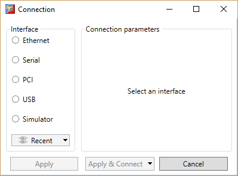
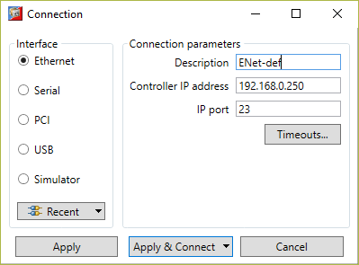
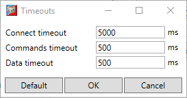
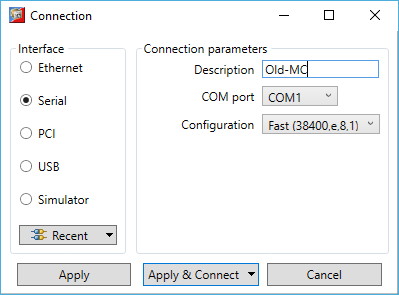
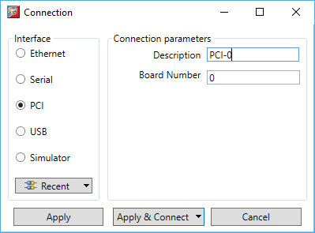
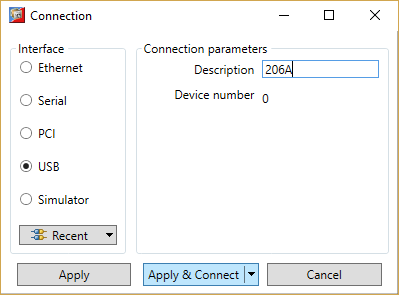
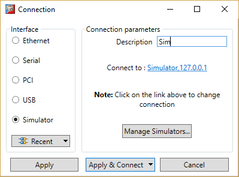

The connection dialog allows the user to configure a communications interface in order to connect to a controller. Ethernet, Serial, PCI and USB interfaces are supported by Motion Perfect. It is possible to select a communications interface and configure it manually or choose from recently used connections.

To choose a recent connection, click on the "Recent" button and choose a connection from the drop-down list.

It is possible to give the connection a name, specify the server IP address (IP address of the controller) and the IP port on which it communicates.
By default a controller will expect a connection from Motion Perfect to be made on port 23.
The “Timeouts” button causes the “Timeouts” dialog to be displayed.

The “Timeouts” dialog allows the user to change the timeouts used for communication with the connected controller(s). Increasing the timeouts may be necessary to communicate reliably with a controller over a connection to a remote location.
Increasing the timeouts will mean that Motion Perfect will take longer to react if communication errors occur.

It is possible to select the COM interface and the configuration (serial link parameters) from a choice of Slow (9600,e,7,2) and Fast (38400,e,8,1), these being the default settings for series 2 & 3 Trio Motion Coordinators.

It is possible to select the board number. Board numbers are allocated when the PC is started up and is enumerated between 0 and the one less than the number of Trio PCI cards connected.

It is possible to select the device number. Device numbers are allocated when the PC is started up and when devices are added or removed. It is normally enumerated between 0 and the one less than the number of Trio USB devices connected. Because of the nature of the internal scanning process which enumerates USB devices and the possibility that devices are added or removed after the initial scan has completed, a given device may not always have the same device number.
It is recommended that only one Trio USB device be connected to a PC at any one time as the order in which the system enumerates more than one device cannot be guaranteed.
It is possible to run more than one instance of the simulator on a single computer. When "Simulator" is selected in this dialog the default simulator IP address is displayed in the dialog. If the current connection is a simulator then that simulator's IP address is displayed when the dialogue is first opened.

To connect to a simulator at a different IP address to the one displayed, click on the "Simulator 127.0.0.1" to display a connection settings dialog.
Normally it will only be necessary to change the IP address to that of the simulator to which you want to connect, or use “connect to a running simulator” at the bottom of the dialog and then select from the list of simulators displayed. If there are no simulators running, click on the “Manage Simulators” button to display the “ Manage Simulators ” dialog.